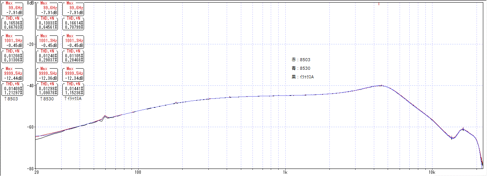
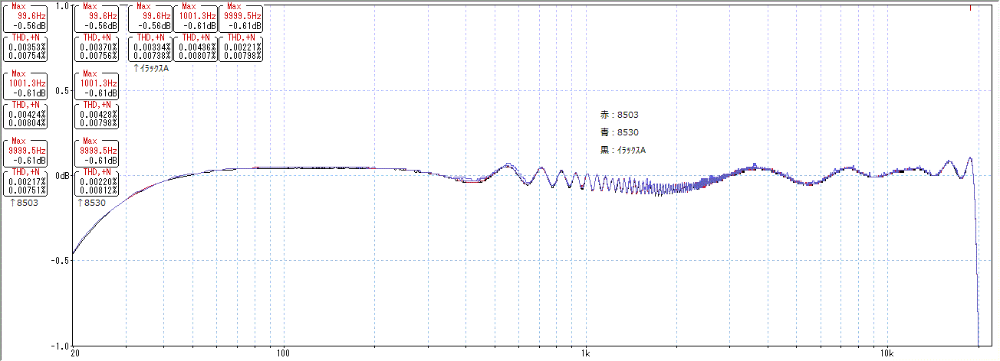

配線材で音は変わるのか
2016年12月09日 カテゴリー：○○で音は変わるのか
※他の測定でわかった通り、歪率や周波数特性の測定はあまり意味がない気がしますが、失敗例として記事にしていこうと思います。音の変化には歪率や周波数特性以外の何らかの特性が関係していて、それは結局自分の耳で確かめるしかないのだろうと思います。
以下の3種類の線材1mの歪率・周波数特性を測定します。抵抗値は全て0.2Ω以下でした。
赤：BELDEN 8503 撚線AWG22（1m120円）
青：BELDEN 8530 単線AWG22（1m120円）
白：住友電工 イラックスA 撚線AWG24（10m300円）
▽結果1 擬似ギター出力を使った場合

長さ1mなのでノイズが多いです。
▽結果2 PC出力を使った場合 ※±1dBまで拡大

単線は高域が云々…等書いてあることがありますが、周波数特性の変化は期待できそうにありません。まぁ今回3種類しか比較していませんので、たまたま同じ特性だったのかもしれません。